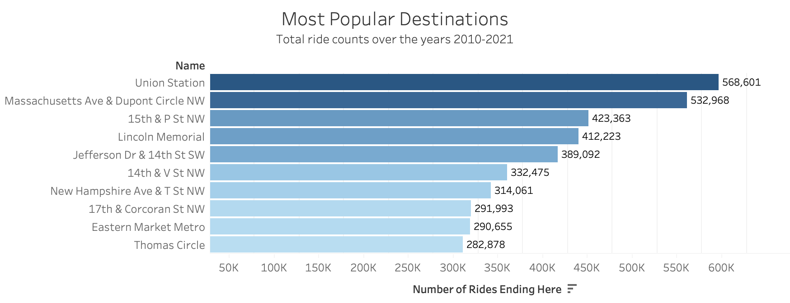

Bike Sharing in DC
exploratory analysis of bike sharing data
Background
Over the last 10 years bike sharing has become more and more popular in big cities, specifically in Washington DC. By exploring several datasets about the DC BikeShare program regarding the use of these bikes, we hope to gain more insight into when and where they are most used. Through these findings, decisions can be made on where to best place bikes and what other cities would most benefit from the introduction of the bike share system. We plan to create a geographical mapping of the trips being taken in order to give viewers a good sense of which stations are the most popular starting points and destinations. We also plan on making animated time series charts showing the monthly and yearly trends in overall usage, and pairing these trends with weather data
Popular Starting Points and Destinations
We collected data from the DC BikeShare website on all the bike rides that have happenned between 2010 and 2017. This data included the start and end destinations of each ride. In this section of our analysis, we aggregated the data to count the total number of rides starting and ending at each bike station. With the help of these maps, we can see the most popular origin points and destinations within the capital.
Starting Points
The following visualizations show the locations from which bike rides begin.

Insights
- 1.
- 2.
- 3.
Destination Points
In contrast, this map displays the locations where bike rides end.(It will be much more interesting once the data also includes the station names)
Insights
- 1.
- 2.
- 3.
Most Popular Routes
I calculated the most popular routes in 2017. The data is good but the visualization isnt the most descriptive. Example: 56th station to 100th station: total rides: 1654, average time: 22 mins. You get the point. I want to create somthing like this this week!
simpler: https://vega.github.io/vega/examples/parallel-coordinates/
harder: https://vega.github.io/vega/examples/edge-bundling/

Insights
- 1.
- 2.
- 3.
Monthly Trends (Not Done)
The following chart shows bike usage over a span of a year.
Insights
Hourly Trends by Day of the Week
It’s workdays (blue) and non-workdays (purple), and a pretty expected pattern is shown. Next I’ll try to add some interaction and a legend. After I can get this done, and feel semi-okay with d3, I’m gonna try something like this to help us avoid line charts! https://observablehq.com/@d3/radial-stacked-bar-chart
^^ This will be so cool looking if you make it animated!!!
Hourly Trends
Insights
- 1.
- 2.
- 3.
Weather Trends
Will refine this further later. Just wanted to get some weather stuff in.
Length of Rentals
Registered vs. Casual Users

Data Sources
insert data sources here